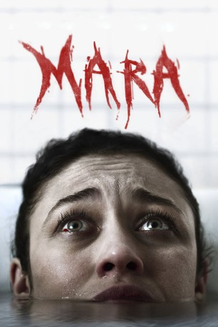

#10157 Mara - Wenn du einschläfst, wird sie dich holen
 
 IMDB-Wertung: 5.1 / 10
IMDB-Wertung: 5.1 / 10  Metascore: 32
Metascore: 32 
Alles deutet daraufhin, dass eine Frau ihren Gatten im Schlaf getötet hat. Zeugin der Tat: deren Tochter Sophie. Der Fall wird alsbald zu den Akten gelegt. Doch dann stößt die Kriminalpsychologin Kate Fuller (Olga Kurylenko) auf ähnlich gelagerte Verbrechen, die schließlich nur eine Vermutung zulassen: Der wahre Mörder ist ein uralter Dämon, der seine Opfer im Schlaf heimsucht. Von nun an darf Kate eines definitiv nicht mehr: die Augen zumachen. Sie könnte sonst nie wieder aufwachen…
Jahr: 2018
Dauer: 98 Minuten
FSK: 16
Land: England Studio: UFATonspuren: DTS - ,
Untertitel: Deutsch, Englisch,
Auflösung: 1080p (1920x808) Größe: 3768 MB
Genre: Thriller, Horror, Krimi
Regisseur: Clive Tonge
Drehbuch: Jonathan Frank, Jonathan Frank, Clive Tonge
Soundtrack: James Edward Barker
Darsteller:
 Olga Kurylenko als Kate
Olga Kurylenko als Kate Craig Conway als Dougie
Craig Conway als Dougie Javier Botet als Mara
Javier Botet als Mara- Rosie Fellner als Helena
 Lance E. Nichols als McCarthy
Lance E. Nichols als McCarthy- Mackenzie Imsand als Sophie
- Ted Johnson als Grandpa
- Mitch Eakins als Martin Ellis
 Melissa Bolona als Carly
Melissa Bolona als Carly- Dandy Barrett als Dr. Botet
- Rebecca Adams als Nurse 1
 Charles Lawlor als Coroner
Charles Lawlor als Coroner- Montré Everett als Head Orderly
- Jacob Grodnik als Josh
- Max Benitz als Justin
- Kathy McGraw als Alicia
- BettyLynn Allison als Weird Old Lady
- Gia Skova als Maria
- Richard Jones als Detective (uncredited)
- Alicia Sessions als Hospital Kid (uncredited)
- Marcus W. Weathersby als Saul
- Gary Strickland als Gary
- Rachel Franklin als Nurse 2
Datei: X:\2018(G-M)\Mara - Wenn du einschläfst, wird sie dich holen (2018, FSK16, 1920x808).mkv seit 13.12.2018
Festplatte: HD 2018(G-Z)-2019(A-Z)
 Es gibt insgesamt 138 Filme in der Gruppe '2018(G-M)'
Es gibt insgesamt 138 Filme in der Gruppe '2018(G-M)'